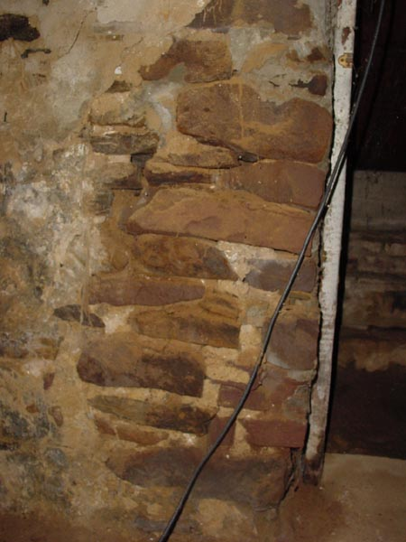

|  |
|
And this is how the majority of the lesser hall is bordered. Natural stone with mud-based mortar. This portion of the house is likely quite old, only the thickenss of the walls (in some cases nearly 2 feet) makes up for this weaker style hand-made construction. [ Back ] |